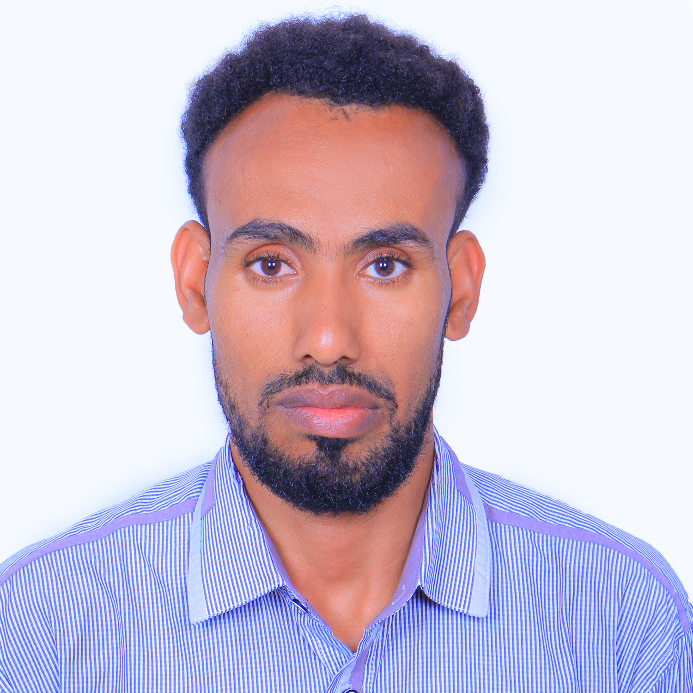

Personal Information
|  |
Given Name: Ewnetu Abebe Family Name: Kassie Country: Ethiopia Phone: +251 926577885 |
Email: ewnetu.abex@gmail.com Website: GitHub: https://github.com/Ewnetu8 Sex: Male | Date of birth: 11/09/1991 Religion: Christian |
Position
- Nov. 2017 - Now: Lecturer in the the Department of Mathematics Deliver lectures, seminars and tutorials. design, prepare and develop courses,modules and teaching materials. develop and implement new methods of teaching to reflect changes in research. assess students’ coursework Kotebe University of Education (KUE), Addis Ababa, Ethiopia,
Work Experience
-
Nov. 2017 - Now : Lecturer in the Department of Mathematics,
KUE, Addis Ababa, Ethiopia,
- Sept. 2016– Nov. 2017 : Teacher at Germany Church School (GCS),
- Oct. 2015 – Sept. 2016 : Teacher at Bahir Dar Academy(BDA),
- Oct. 2015 – Sept. 2016 : Teacher,Department head at Sedie Adada High school
Education and Training
-
Sep.2010 - July 2013 BSc. in Applied Mathematics. Arba Minch
University (AMU)
-
Sep.2020 - Mar.2023: MSc.in Computational Data Science in (Data
Science),
Addis Ababa University, Addis Ababa, Ethiopia,
Personal Skills
- Mother tongue; Amharic
-
Other languages
- English-Proficient user
- Amharic-Proficient user
- English-Proficient user
-
Communication skills: I have good communication skills. (Gained
through experience in teaching, leading, and coordinating)
Job-related skills
-
Community service: tutoring high school students and providing them
manual with mathematics problems
Computer skills
-
Machine Learning , Deep Learning, Python , R, FORTRAN, and
MATLAB,SQL,Linux ,LaTeX Git .